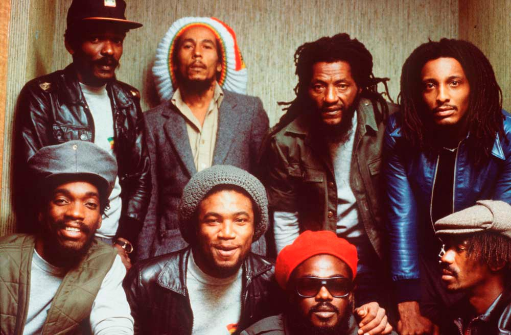
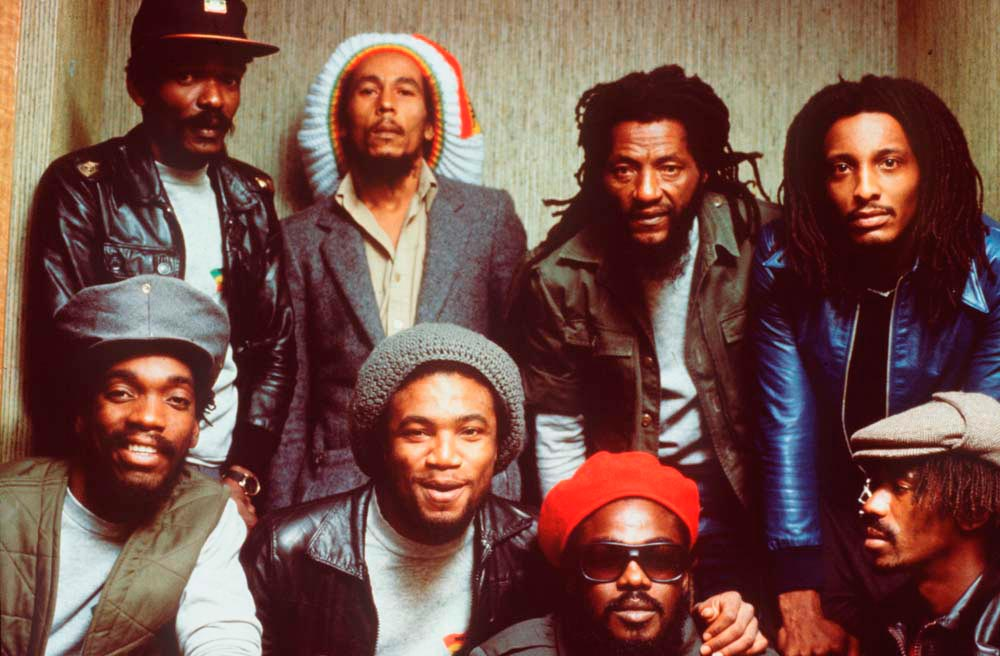

Robert Nesta Marley dit Bob Marley, né le 6 février 1945 à Nine Mile (Jamaïque) et mort le 11 mai 1981 à Miami (États-Unis) d'un cancer généralisé, est un auteur-compositeur-interprète et musicien jamaïcain.
Il rencontre de son vivant un succès mondial, et reste à ce jour le musicien le plus connu du reggae, tout en étant considéré comme celui qui a permis à la musique jamaïcaine et au mouvement rastafari de connaître une audience planétaire. Il a vendu plus de 200 millions de disques à travers le monde1. Bob Marley commence sa carrière musicale en 1962. En 1963, Robert Nesta Marley forme avec Neville O'Reilly Livingston (plus tard Bunny Wailer) et Wynston Hubert McIntosh (plus tard Peter Tosh) un trio vocal sur le modèle des groupes vocaux américains comme les Impressions. Le trio est tout d'abord appelé les Wailing Wailers, avant de finir par s'appeler The Wailers. C'est avec Simmer Down, en 1964 que The Wailers rencontreront leur premier vrai succès local en Jamaïque2. Beaucoup d'autres suivront jusqu'à 1968... Entre-temps, Bob Marley est devenu rasta à partir de 1966, sous l'influence de personnages importants (comme Mortimo Planno) du mouvement rastafari, alors en plein essor en Jamaïque.


 
